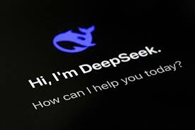

Introduction
My name is Mohammed Wasif Sarwar and I am the sole developer of this website.
In this website, you will learn all about myself, my skills and why I am a good candidate for any potential employer. But before you consider me,
I must begin with a short introduction of myself.
I was born on the 7th of October in 2005 and I am 19. I spent my whole life in the vibrant city of Dubai, UAE. Currently, I am a first-year undergraduate
student at the Aston University,UK where I am pursuing a degree in Computer Science. In 2024, I graduated from Cambridge International School with
flying colours. My academic life at school was always filled with excellence and I am sure I will be replicate my earlier success to fulfill
any employer's expectations of what they want for their company. Filled with a natural curiousity for computers and software, as well as mathematics,
I have always excelled in these two subjects and my problem-solving skills are ready for whatever challenges are thrown my way.
News about my Interests
Deepseek challenges Western competitors with its mathematical and problem-solving skills.
Will it challenge American AI dominance? Click here to find out.

Cosmologists Try a New Way to Measure the Shape of the Universe.
Is the universe flat or infinite? Or is it a completely unknown shape?
This depends on the critical density of the Universe, a fundamental cosmological constant. But physicists are now trying something completely different.
To read the whole article, click
here
Come and check my portfolio!
 Since I have started my studies at Aston University, I have learned Processing as well as Java. I have taken my learning a step ahead in each
of these languages to create content that reflects an intermediate level of knowledge with each of these programming languages.
Since I have started my studies at Aston University, I have learned Processing as well as Java. I have taken my learning a step ahead in each
of these languages to create content that reflects an intermediate level of knowledge with each of these programming languages.
Check them out!
My hopes for the future
I wish to be a software Engineer and work for the developement of humanity. I wish to improve existing software frameworks and work to use software to the developement of education. I plan to learn Android and IOS and thus be able to program and be versatile
in a wide variety of software environments. However, I also love mathematical physics and plan to pursue that in the future and thereby make many important
contributions to mathematics and computer science. I would love to work on quantum computing in the future.